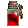

POTIONS
Potions in Diablo 1 HD mod instantly restore health or mana (or both) but the amount depends on which character uses them.
Healing Potion:  Full Healing Potion: Mana Potion: Full Mana Potion: Rejuvenation Potion: Full Rejuvenation Potion:
For Normal Potions the amount of health / mana restored has the following range:
(bonus * max / 8) to (3 * bonus * max / 8)
And the bonus, which depends on the character class, is listed below:
| Character | WARRIOR | ROGUE | SORCERER | BARBARIAN | NECROMANCER | ASSASSIN |
|---|---|---|---|---|---|---|
| Bonus (Health) | ??? | ??? | ??? | ??? | ??? | ??? |
| Bonus (Mana) | ??? | ??? | ??? | ??? | ??? | ??? |
ELIXIRS
Elixirs in Diablo 1 HD mod have changed completely, they provide only a temporary attribute boost and all 4 can be purchased.
Elixir of Strength: Elixir of Dexterity: Elixir of Magic: Elixir of Vitality:
| ELIXIR OF STRENGTH | 10 minutes | Strength increase (10 + Character Level/2) |
|---|---|---|
| ELIXIR OF DEXTERITY | 10 minutes | Dexterity increase (10 + Character Level/2) |
| ELIXIR OF MAGIC | 10 minutes | Magic increase (10 + Character Level/2) |
| ELIXIR OF VITALITY | 10 minutes | Vitality increase (10 + Character Level/2) |